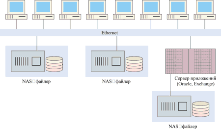
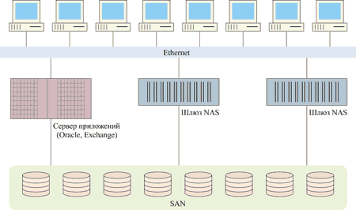
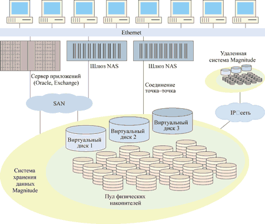

Александр Минаков
По оценкам специалистов, каждый год в мире создается 1-2 млрд Гбайт новых данных. В условиях продолжающегося роста потребностей бизнеса в информации особое значение приобретают масштабируемость и управляемость систем хранения. По мнению многих специалистов, интегрированная модель хранения, объединяющая особенности нескольких технологий (скажем, SAN, NAS и IP-хранилище), может оказаться эффективнее, чем модель на базе единственной инфраструктуры транспортной сети. В любом случае желательно, чтобы на нижнем уровне платформа систем хранения была независима от вышележащих слоев сетевого транспорта. Многие эксперты считают, что виртуализованная архитектура хранения компании XIOtech (http://www.xiotech.com) обеспечивает фундамент для сетевой системы хранения, полностью независимой от транспортного уровня и предоставляющей корпоративным клиентам преимущества виртуализации независимо от реализации сети.
С 2001 г. на рынке сетевых хранилищ стали говорить о конвергенции NAS - SAN, но нам представляется более уместным термин "интеграция NAS - SAN", описывающий наиболее перспективный вариант реализации NAS.
Стратегия предприятия может базироваться на использовании NAS, SAN, IP-хранилищ или интеграции нескольких технологий; важно, чтобы лежащая в основе этого платформа была тщательно подобрана. По мнению разработчиков, именно система Magnitude корпорации XIOtech обеспечивает гибкую, масштабируемую основу для систем NAS, SAN, IP-хранилищ или любого иного типа используемого сетевого транспорта.
Еще раз о NAS
Напомним, что сетевые устройства хранения данных NAS (Network Attached Storage) возникли как простой и недорогой способ соединения распределенных пользователей с совместно используемыми системами хранения данных. В общем случае устройства NAS используют встроенную операционную систему файлового сервера и работают как платформно-независимые файловые серверы. Следует также отметить, что они не могут запускать на исполнение приложения или предоставлять такие сервисы, как управление файлами. Эти устройства, подключенные к локальной сети, поддерживают коммуникационный протокол TCP/IP и сетевые файловые протоколы, например, CIFS (Common Internet File System) и NFS (Network File System).
Пожалуй, NAS представляет собой не особую технологию, а скорее способ интеграции компонентов для специфического приложения. Именно поэтому устройства NAS часто называют приборами (appliances) или приставками - они ориентированы на конкретное применение, подобно домашним электробытовым или офисным приборам.
Как известно, основное назначение любого прибора - обеспечить простоту использования в данном практическом контексте. Обратная сторона такого положения дел в том, что такие приборы нельзя легко перемещать в другой контекст использования. Кроме того, они недостаточно хорошо масштабируются при развитии самого контекста их применения. Для примера приведем аналогию с тостером, рассчитанным на два ломтика хлеба и интегрирующим в себе две технологии (нагревательный элемент и термостатическое управление). Такой тостер эффективен и прост в использовании на домашней кухне, но практически бесполезен в большом ресторане. По мере увеличения числа тостеров - в ответ на растущую потребность в тостах - превышается допустимая мощность сетевых розеток, а большое число сетевых шнуров затрудняет использование приборов и даже делает его опасным. В таком случае пользователь должен выбросить кухонные тостеры и найти лучший способ готовить тосты в больших количествах.
Обобщая сказанное, можно сказать, что самые простые в использовании и максимально специализированные приборы являются также и минимально масштабируемыми. Это в полной мере относится и к NAS-системам. Для решения проблемы масштабирования - в случае как с тостерами, так и с NAS-системами, - необходимо прибегнуть к технологической интеграции.
Категории NAS
В решениях NAS используются различные технологии - сетевой интерфейс, операционная система, управляющая файлами, тот или иной процессор (вычислительная платформа), RAID-контроллер, дисковая полка и сами жесткие диски. Многие специалисты используют классификацию систем NAS, в рамках которой выделяются три категории, различающиеся главным образом степенью интегрированности. Все три типа включают файловую систему, функции обработки сетевого протокола и интегрированные сервисы управления, обычно ассоциируемые с концепцией "прибора".
В таблице приведены описания основных функций устройств NAS и степень их интегрированности в каждой категории продуктов. Для сравнения также приводятся функции файлового сервера NAS, как для архитектуры сетевого хранилища данных (SAN), так и для организации серверной дисковой памяти (DAS).
Классификация NAS
| Функция или компонент NAS | NAS-файлер или NAS head |
Файл-сервер DAS | Шлюз NAS | Файл-сервер, подключен-ный к SAN | Комментарии |
| Интерфейс сетевой передачи данных | Да | Да | Да | Да | Для увеличения пропускной способности может использоваться механизм разгрузки TCP (TOE) |
| Файловый сервис, ПО обработки сетевого протокола | Да | Да | Да | Да | У NAS-приборов есть интегри-рованная поддержка нескольких сетевых файловых протоколов; файловые серверы предлагают этот сервис за счет дополнитель-ного ПО |
| Контроллер RAID | Да (специальный) | Да (открытый) | Нет | Нет | Обычно NAS-файлеры поддерживают специализи-рованные системы хранения или системы JBOD, что привязывает заказчика к данному типу системы |
| Объединитель-ная плата и полка для дисков | Да | Да | Нет | Нет | Обычно в NAS-файлерах используются специальные системы хранения, чтобы привязать заказчика |
| Физические диски | Да | Да | Нет | Нет | Обычно в NAS-файлерах используются специальные системы хранения |
Обратим внимание на схожесть NAS-файлеров и файловых серверов DAS, а также шлюзов NAS и файловых серверов, подключенных к SAN. Напомним, что JBOD - простой массив дисков, не поддерживающий специальных технологий резервирования данных и повышения производительности системы, подобно RAID.
NAS-файлер
NAS-файлер (рис. 1) объединяет все функции NAS в пределах единого устройства. Это может быть отдельное физическое устройство, как в случае недорогих систем NAS, или же целая конструкция, использующая специальные патентованные соединения между функциональными элементами. При том, что все три категории продуктов NAS могут рассматриваться в качестве законченных приборов, у заказчиков концепция приставок чаще всего ассоциируется именно с NAS-файлерами, отличающимися высокой степенью интеграции и в полной мере реализующими принцип "включи и работай" (plug-and-play).
|  |
| Рис. 1. "Острова данных" NAS-файлеров.
|
Современные NAS-файлеры обычно используют специфичные для системы физические устройства хранения. Считается, что у ведущих продавцов систем типа файлер при формировании клиентской базы значительная часть дохода и прибыли приходится на сбыт закрытых дисковых систем хранения. Видимо, это особенно характерно для продавцов корпоративных систем хранения. Отметим, что основная особенность специализированной модели NAS-файлера заключается в использовании патентованного ПО. Только такое ПО может непосредственно и напрямую использовать дисковое хранилище файлера.
Сегодня NAS-файлер -это, пожалуй, единственная NAS-конфигурация, которая охватывает все сегменты рынка - от SOHO до корпоративных систем. Среди представленных в настоящее время на рынке NAS-файлеров следует особо отметить сетевые приборы NetApp компании Network Appliance, лидирующей в данном сегменте.
Системы типа NAS head
В системах NAS head реализованы все функции NAS-файлера, за исключением объединительной платы (storage backplane), дисковой корзины и самих физических дисков.
Интегрированный RAID-контроллер позволяет поставщикам повысить эффективность использования специализированных систем хранения, как в случае с NAS-файлерами. Некоторые из таких решений используют нестандартный размер сектора или вообще нестандартный формат, а также специальные сигнатуры, помещаемые во встроенные специализированные микропрограммы накопителя или записываемые на его нулевую дорожку. В принципе в системах NAS head могут использоваться готовые серийные корзины для дисков и сами диски, но никто из ведущих поставщиков NAS-систем до настоящего времени не предлагал такую открытую конструкцию.
NAS-шлюзы
Наиболее привлекательными для сектора корпоративных систем многие считают шлюзы NAS (рис. 2). В таком шлюзе специфический RAID-контроллер заменен открытым интерфейсом с SAN, соответствующим стандарту ANSI. Обычно это адаптер HBA (Host Bus Adapter) с интерфейсом Fibre Channel. С архитектурной точки зрения шлюз NAS выглядит примерно так же, как сервер приложений, подключенный к сети хранения SAN, поэтому такие устройства часто называют серверными приставками (server appliances). Шлюз NAS обеспечивает богатую функциональность, удовлетворяющую нуждам различных пользователей. Для пользователя и сетевого администратора шлюз NAS выглядит как NAS-файлер. Менеджеру системы хранения такой шлюз обеспечивает простоту использования и управления - даже в большей степени, чем NAS-файлер. Фактически функциональность шлюзов NAS была доступна со времени появления сетей хранения SAN в форме подключенных к SAN файловых серверов с файловыми системами NFS и CIFS.
|  |
| Рис. 2. Доступ к SAN с помощью шлюзов NAS.
|
Шлюз NAS отличается от других категорий NAS-продуктов способностью использовать разделяемую неспецифическую (открытую) память, а также память от третьих производителей. Этот вариант дает пользователям возможность более гибко разрабатывать общую архитектуру системы хранения, отвечающую современным требованиям к SAN и NAS. Сторонники таких систем часто позиционируют шлюзы NAS как лучший выбор для обеих категорий.
Поскольку шлюз NAS основывается на подключаемой через Fibre Channel системе хранения, считается, что его установка в общем случае более сложна и стоит дороже, чем в реализациях NAS-файлера. Но затраты, связанные с этой дополнительной сложностью, могут быть с лихвой компенсированы благодаря способности шлюза NAS работать в качестве пула носителей, а также иных преимуществ виртуализации систем хранения и SAN.
Практически все крупные продавцы серверов в 2001 г. выпустили шлюзы NAS; некоторые из них были построены на основе Microsoft Windows 2000 Server Appliance Kit (SAK). Кроме того, компании Veritas Software и Novell выпустили даже программные версии шлюза - так называемые soft appliances. Программная реализация еще больше раскрепощает заказчика, обеспечивая свободу выбора серверной платформы, удовлетворяющей различным требованиям к производительности и готовности, и позволяя масштабировать производительность NAS-системы даже в пределах самого сервера. Такая реализация позволяет заказчикам рассматривать NAS как приложение, которое может выполняться на существующей серверной платформе, а не особую категорию оборудования. Этот подход приводит к снижению совокупной стоимости владения (TCO) за счет более эффективного использования инвестиций в существующие серверы, скидок продавцов и сервисных мероприятий.
При таком упрощенном рассмотрении легко видеть, что в терминах функциональности NAS и SAN на самом деле никогда по сути не различались и что NAS на самом деле представляет собой приложение - программный файловый сервер. NAS-приложение может быть реализовано в виде "приборов" - программного прибора (soft appliance), серверного устройства (server appliance) или файлера (filer), но в любом случае речь идет о приложении, которое располагается поверх блочных устройств хранения. Теперь уже очевидно, что только файлерные реализации NAS стали существовать самостоятельно, дистанцировавшись от преимуществ систем SAN. Некоторые эксперты полагают, что противопоставление NAS и SAN относится к способу "упаковки" технологий, а не к преимуществам самих этих технологий.
Ограничения NAS-файлера
Считается, что главный недостаток файлеров заключается в их плохой масштабируемости - вычислительные ресурсы, доступные на любой данной платформе, по существу фиксированы. В бизнесе наиболее критичные данные редко используются по устоявшейся или статической схеме. NAS-файлеры обычно сталкиваются с проблемами, когда какой-нибудь сегмент системы хранения начинает использоваться не так, как раньше, - например, при изменении циклов генерирования отчетности или процесса обработки зарплаты.
Индивидуальные файлеры не могут совместно использовать емкость хранения с другими файлерами, поэтому пользователи таких устройств неизбежно сталкиваются либо с нехваткой емкости хранения, либо, что более вероятно, с ограничениями пропускной способности сетевого процессора. Причина заключается в том, что NAS-файлеры по сути используют модель непосредственно подключаемой дисковой памяти (Direct Attached Storage, DAS).
Именно эти проблемы масштабирования привели к необходимости использования сетей хранения SAN. Осознав эквивалентность NAS-файлера и файлового сервера DAS, легко понять проблемы масштабируемости, с которыми сталкиваются проектировщики NAS-файлеров. Считается, что процедуры масштабирования в случаях с серверными фермами DAS и серверными фермами NAS очень похожи. Как в том, так и в другом случае развитие системы хранения приводит к появлению "островов" накопителей, которыми нужно управлять отдельно. В то же время инженеры, отвечающие за работу приложений, по мере изменения системы должны уметь устранять узкие места, снижающие производительность, управляя вычислительными ресурсами на уровне сервера NAS.
И, наконец, модель NAS-файлера предполагает, что заказчики наряду с множеством других устройств используют еще одно устройство, нуждающееся в управлении, профилактике, модернизации и поддержке. Хотя единственным NAS-файлером управлять не так уж сложно, затраты на управление несколькими файлерами возрастают во много раз.
Кроме того, емкость хранения необходимо сделать доступной пользователям по сети данных - и масштабирование ее должно быть простым. К счастью, ответ, как упоминалось ранее, уже имеется - это шлюз NAS. Путем разделения NAS-файлера на два основных компонента - сервер и систему хранения данных - устраняется основное ограничение файлера, а именно связка сервер - DAS.
Ограничения по пропускной способности сети
Вообще говоря, проблемы масштабируемости NAS-файлера проистекают из фундаментального ограничения стековой обработки TCP. Это верно даже в случае, когда нагрузка обработки перераспределяется в NAS между основным процессором и процессором разгрузки с помощью специального механизма разгрузки TOE (TCP Offload Engine) на сетевой интерфейсной плате. Простое увеличение числа сетевых плат не помогает; каждая из них имеет свой собственный IP-адрес, и это еще сильнее фрагментирует систему хранения в пределах файлера.
Компьютерная отрасль оказывала жесткое давление на производителей в попытке заставить их решать проблему стековой обработки TCP, но повсеместное присутствие Ethernet на рынке и смещение интересов к Internet SCSI (iSCSI) подхлестнули огромные инвестиции нескольких компаний в ускорение процесса разгрузки TCP. Несмотря на все эти усилия, механизмы разгрузки, позволяющие гигабитному Ethernet (GbE) работать на максимальной скорости, становятся доступны только сейчас. Эти новые продукты используют самые современные технологии.
TOE - пример одной из новых технологий, которая наконец обеспечила возможность обработки трафика систем хранения поверх IP на скоростях, присущих гигабитному Ethernet. Однако эффективность обработки стека TCP, требуемая для обработки данных на скоростях 10 GbE, в десять раз превышает скорость, необходимую для GbE. Очевидно, пройдет несколько лет, прежде чем NAS-файлеры, использующие GbE TOE, достигнут полной скорости и станут способны целиком востребовать полосу пропускания сети 10 GbE.
Тем временем даже сегодняшние системы SAN корпоративного класса среднего и нижнего уровней нуждаются в очень высокой пропускной способности, полностью занимающей полосу GbE. Перспективные жесткие диски, которые вскоре появятся на рынке, будут способны самостоятельно максимизировать эффективность использования интерфейса GbE. Весьма вероятно, что в ближайшие годы подсистемы хранения среднего класса обеспечат пропускную способность 1 Гбайт/с и даже "насытят" сети 10 GbE за несколько лет до того, как этот уровень обработки TCP будет доступен.
В истории отрасли до настоящего времени скорости интерфейса систем хранения всегда опережали способность накопителей "заполнить" их полосу пропускания. Транспортные протоколы на основе TCP, например, NAS и iSCSI, впервые смогли задействовать всю пропускную способность, обеспечиваемую дисковыми накопителями. Одно из предложенных решений проблем латентности, пропускной способности и загрузки процессора, присущих NAS, включает протокол файловой системы с прямым доступом DAFS (Direct Access File Systems) в связке с новыми сетевыми транспортами, основанными на архитектуре виртуального интерфейса (Virtual Interface, VI). Эта новая комбинация упрощенного протокола и транспорта с низкой латентностью позволяет выполнять прямое копирование данных с устройств хранения в память приложения и наоборот.
С технологической точки зрения этот подход имеет хорошие перспективы в решении проблем NAS, а возможно, и проблем масштабируемости, но стоимость адаптации этих новых технологий будет перевешивать их преимущества до тех пор, пока DAFS и VI не получат широкого признания. Помимо недостаточной распространенности DAFS или VI, пользователям следует учитывать еще один момент. Эти технологии будут работать фактически в любой физической сети (например, Fibre Channel, GbE, InfiniBand), но трафик DAFS/VI не сможет сосуществовать с трафиком IP. Более того, при передаче данных через DMA (прямой доступ к памяти) в память приложения по сетям GbE появляется риск нарушения безопасности. Отсутствие сетевых протоколов для снижения этого риска означает, что такой подход к NAS потребует наличия еще одной дискретной сети в центре данных для заказчиков, желающих использовать инфраструктуру Ethernet.
Кстати, многие компании, одними из первых внедрявшие DAFS и VI, собираются внедрять и большие сети хранения SAN с использованием Fibre Channel. Зрелость и другие преимущества систем Fibre Channel SAN, а также низкая латентность коммутаторов Fibre Channel делают сети хранения SAN практически идеальным средством для развертывания VI и DAFS, которые могут легко сосуществовать с другими протоколами Fibre Channel в той же системе SAN.
При том, что в будущем DAFS и VI могут разрешить некоторые из проблем NAS, уже сейчас есть настоятельная потребность в средствах масштабирования файл-серверных характеристик процессоров NAS - независимо от емкости и пропускной способности системы хранения, стоящей за ними. К счастью, шлюзы NAS делают именно это, и они доступны уже сегодня.
Magnitude и REDI
По утверждению разработчиков, виртуализованная архитектура XIOtech, состоящая из аппаратной платформы Magnitude и ПО семейства REDI, обеспечивает, в отличие от других современных систем хранения данных, не зависящую от средств транспортировки сетевую основу для систем NAS, SAN, IP-хранилищ и практически для любого иного типа связи с сетевыми системами хранения (рис. 3).
|  |
| Рис. 3. Интеграция с имеющимися технологиями.
|
С момента развертывания первых систем на основе аппаратной платформы Magnitude заказчики подключали к ней серверы - сначала при помощи соединений типа точка-точка, затем через арбитражную петлю (FC-AL), а сегодня - при помощи фабрик Fibre Channel SAN и IP. Для совместного использования файлов пользователи просто развертывают на своих серверах какой-то из готовых модулей ОС или стандартное для данной файловой системы ПО (например, сменные модули для NFS или CIFS). В сочетании с Magnitude эти серверы выполняют все существенные функции NAS-файлеров, обеспечивая простоту использования.
Но виртуализованная архитектура XIOtech дает заказчику еще больше. Она позволяет масштабировать емкость независимо от требований к полосе пропускания файл-сервера, от наличия SAN и от сетевой ОС или файловой системы. Кроме того, XIOtech предусматривает консолидацию нескольких серверов в пределах единого сервера. Виртуализация для серверов осуществляется непосредственно, через SAN, NAS или через все коммуникационные модели одновременно. При масштабировании системы хранения ее не нужно перепроектировать.
По словам представителей XIOTech, пользователи Magnitude регулярно сообщают, что их мало интересует развертывание NAS в корпоративной среде. Это связано с тем, что многих проблем, решаемых файлерами NAS, у пользователей Magnitude просто нет.
Создатели MagnitudeКомпания XIOtech, "дочка" корпорации Seagate Technology, разрабатывает, производит и продает комплексные решения в области сетей распределенного хранения информации. XIOtech основана в 1995 г., среди ее заказчиков - многие компании из списка Fortune 2000, в том числе финансовые учреждения, страховые компании, предприятия промышленности и розничной торговли, а также организации здравоохранения, учебные заведения, органы государственного управления, компании, занятые в области электронной коммерции и обработки изображений. С 1998 г. компания выпускает корпоративные дисковые массивы Magnitude. XIOtech - активный участник отраслевой ассоциации сетей хранения данных SNIA (Storage Networking Industry Association). |
Некоторые особенности Magnitude
Система распределенного хранения данных Magnitude полностью соответствует стандартам открытых систем, ее единая централизованная конфигурация включает все компоненты SAN - высокопроизводительный контроллер хранения данных, ПО управления сетью и до 64 дисковых накопителей общей емкостью 11,5 Тбайт. Преимущество архитектуры виртуализованных систем хранения XIOtech - в упрощении управления системой хранения данных и сервером. Аппаратная платформа Magnitude (рис. 4) предоставляет бизнесу преимущества виртуализации, полностью независимые от типа сети и наиболее адекватные запросам приложения или пользователя. Системы SAN, NAS, IP или любая их комбинация (протоколы, транспорты и файловые системы) могут использоваться в данном случае самостоятельно или сосуществовать с другими поверх сети.
 |
Рис. 4. Платформа XIOtech Magnitude.
|
Разработанная XIOtech архитектура REDI (Real-time Data Intelligence), обеспечивающая действительно интеллектуальный доступ к данным в реальном времени, сводит все физические дисковые накопители Magnitude в единый виртуальный дисковый массив. В результате образуется легко масштабируемая сеть хранения данных, способная удовлетворить постоянно растущие потребности бизнеса.
Дисковые массивы XIOtech Magnitude всегда распределяют все данные по всем доступным дискам - как при работе с базами данных, так и в других случаях. Это особенность так называемой интеллектуальной виртуализации дисков IVD (Intelligent Virtual Disk). Все тома, которые "видны" подключенным к Magnitude серверам, на деле являются виртуальными - соседние блоки одного такого тома могут располагаться на разных физических дисках. В полностью укомплектованном дисками массиве можно создать несколько десятков виртуальных томов. В результате при доступе к любому подмножеству данных пропускная способность канала и каждого отдельного диска, а также скорость работы каждого диска практически не накладывают никаких ограничений.
Системное ПО REDI рассматривает всю совокупную дисковую емкость массива как единый пул, из которого выделяется пространство для организации виртуальных дисков. Таким образом, упрощается манипулирование дисковым пространством, включая увеличение или уменьшение емкости томов, отданных каждому серверу или приложению.
Виртуализованная архитектура Magnitude легко адаптируется и позволяет применять новые дисковые накопители сразу же после их появления на рынке; таким образом, пользователи имеют постоянный доступ к последним достижениям в плане емкости и пропускной способности. Фактически пользователи получают ценную возможность использовать в рамках одной системы Magnitude одновременно и новые дисковые накопители повышенной емкости, и, при желании, прежние накопители меньшей емкости.
Интересно, что разница между физическими дисками и виртуальными томами в Magnitude настолько велика, что в системе могут одновременно функционировать жесткие диски разного размера, имеющие разную скорость вращения (например, 36-Гбайтные диски со скоростью 7200 об./мин могут спокойно работать вместе со 180-Гбайтными со скоростью 10 тыс. об./мин). Таким образом, пользователь может сохранить свои прежние инвестиции в устройства хранения данных, эффективно использовать все ранее приобретенные дисковые накопители.
В системе могут использоваться дисковые накопители емкостью 18, 36, 73 и 180 Гбайт с частотой вращения пластин 7200, 10 тыс. и 15 тыс. об./мин. В качестве интерфейса используется Ultra 160 SCSI LVD.
Кэш-память как таковая в Magnitude не используется, поскольку здесь предлагается использовать очередь запросов. Для этой цели разработана специальная технология QMT (Queue Management Technology). Этот механизм анализирует очередь запросов на чтение и запись и "слепляет" между собой схожие операции. Например, если два запроса в очереди читают смежные области дисков, система преобразует их в один. Или если два запроса последовательно записывают в одну и ту же область, данные, записанные первым процессом, будут немедленно перезаписаны вторым. При этом все операции записи в Magnitude выполняются синхронно - в результате количество операций позиционирования головок, которые выполняет система хранения, сокращается, а ее производительность растет. В отличие от других систем, где глубина очереди не превышает 32 запросов, QMT позволяет работать с очередями глубиной в тысячи запросов.
В Magnitude используются следующие уровни RAID - 0, 1, 5, 10 и 0+1. Зеркалирование дисков (уровень RAID 1) выполняется аппаратно, без дополнительной нагрузки на сервер. Кроме того, системное ПО REDI может создавать и моментальные копии дисков (snapshots). Такие копии можно использовать для резервного копирования (в том числе внесетевого или внесерверного) без остановки системы. Более того, можно реплицировать данные всего массива на другой такой же массив через IP-сети или канал Fibre Channel.
Поскольку уровень RAID 0 (распределение данных по всем дискам) Magnitude реализует всегда и автоматически, создаваемые в системе тома RAID 1 (зеркальные) на деле являются томами RAID 10 (0+1). Система распределяет данные так, чтобы случайный доступ к ним выполнялся наибыстрейшим способом. Можно создавать виртуальный том для каждого типа файлов базы данных, и каждый из этих томов будет физически распределен по всему доступному дисковому пространству.
Заключение
NAS-файлеры обеспечивают на уровне файлов экономичный доступ к системе хранения небольшой емкости, но они не масштабируются по мере роста требований к емкости системы хранения и производительности ИТ-среды и приложений.
Шлюзы NAS, подключаемые к разделяемой, централизованной системе хранения данных, хорошо удовлетворяют требованиям к файловому серверу предприятия. Они позволяют независимо наращивать как объемы хранения, так и производительность, обеспечивая фундамент для формирования стратегии, которая может адаптироваться по мере развития потребностей организации.
Разработчики платформы XIOtech Magnitude полагают, что она решает проблемы хранения данных на базовом уровне. Сети, развернутые поверх Magnitude, могут развиваться и масштабироваться независимо от самой основы систем хранения. Инвестиции в аппаратную платформу Magnitude гарантируют, что заказчик получает фундамент сетевой системы хранения, которая может интегрироваться с новыми технологиями и адаптироваться к меняющимся требованиям.